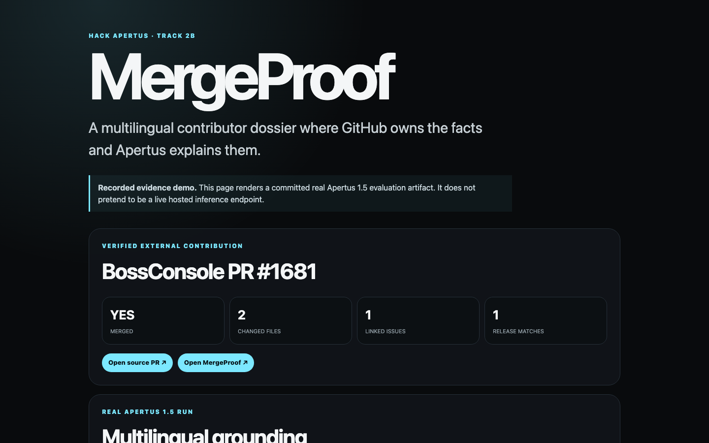

MergeProof / Evidence-first multilingual AI
Hack Apertus 2026 / Apertus Adoption / Track 2B · Own Project
Know what a
merged PR proves.
An auditable multilingual contribution dossier, grounded in live GitHub evidence and explained by the open Apertus 1.5 model.
4/4Languages retained correct MERGED status in real local Apertus run
0Invalid evidence references accepted after grounding checks
5 / 5Benchmark runs with stable verifiable GitHub facts
8BLocally evaluated Apertus 1.5 community MLX quantization
The problem
A merged pull request is easy to display and easy to overinterpret. Public portfolios blur the distinction between a merged contribution, a linked issue, a shipped release, and a paid bounty. Model-generated descriptions can inflate such claims.
Our answer
MergeProof retrieves verifiable GitHub facts, compresses them into a bounded evidence packet, asks Apertus to write clear explanations in English, German, French or Russian, and rejects narrative assertions whose evidence_refs do not match actual source fields.
Trust boundary
GitHub is authoritative for repository facts. Apertus is an explanation layer, never the judge of merge status, release inclusion or payment.
01 / System design
Purposeful AI · constrained generation · defensible claims
Deterministic first.
Model second.
All repository facts are collected independently of Apertus and fed into a compact structured request. Output is not trusted unless each claim points to matching evidence.
Public GitHub
PR URL
→
Evidence
collector
→
Bounded
JSON packet
→
Apertus 1.5
multilingual
→
Grounding
validator
1. Evidence acquisition
- GitHub PR state and metadata; changed-file summaries; linked issue references; fetched release matches.
- Strict PR URL parsing, bounded collection and explicit network timeouts.
- Source of truth is retained independently of generated model text.
2. Apertus explanation
- Receives structured, bounded evidence rather than the full repository.
- Produces multilingual claims and a technical/portfolio summary with evidence_refs.
- Provider adapters support local, CSCS managed and Public AI OpenAI-compatible endpoints.
3. Evidence gate
- Rejects invented references such as files[0].missing; also checks nested fields.
- Discards unsupported prose and replaces it with deterministic evidence-backed fallback.
- Overrides model-written merge status with the actual GitHub boolean.
- Does not claim bounty payment, security impact, or deployment without separate evidence.
Safety principle: explanation can be fluent but must not outrank provenance. Invalid model outputs are filtered before the user sees them.
Demonstrated target
github.com/risa-labs-inc/BossConsole/pull/1681 — merged PR, linked issue #1632, two changed files and release reference BOSS v9.5.25.
02 / Measured results
Technical rigour · real local evaluations
Evidence, not invented
benchmark numbers.
5 / 5Independent GitHub evidence collections with stable fact profile
1,060 BCompact evidence packet in each recorded run
Public repository evidence benchmark
| Measure | Observed result |
|---|
| Benchmark input | BossConsole PR #1681 (real merged PR) |
| Fact stability | 5 runs: merged=true, 2 changed files, 1 linked issue, 1 matched release |
| Collection latency | Min 990.58 ms · median 1,127.70 ms · max 4,568.08 ms |
| Network mode | Anonymous public GitHub API; no GitHub token |
Real Apertus 1.5 8B multilingual evaluation
Model: m1rkocasu/Apertus-v1.5-8B-text-MLX-mxfp4 · mlx-lm 0.31.3 · local loopback endpoint on Apple Silicon · thinking disabled. Not a CSCS performance benchmark.
| Language | Observed inference latency | Grounded summary + portfolio |
|---|
| English | 17,498 ms | Pass |
| German | 13,373 ms | Pass |
| French | 12,807 ms | Pass |
| Russian | 20,286 ms | Pass |
Median latency: 15,435.5 ms. Merge status remained correct in 4/4 languages; invalid accepted evidence refs after sanitization: 0; unsupported narrative fields after sanitization: 0. Four-language output was validated against real GitHub facts.
An earlier malformed Russian JSON answer motivated exactly one optional format-repair pass using the same Apertus model. The grounding validator runs after repair; repeated malformed output still fails.
03 / Prototype
Implementation feasibility · working public demonstration
Usable prototype.
Visible evidence.
The project has a public browser demo backed by a committed real Apertus evaluation artifact. It is explicitly presented as a recorded evidence demonstration, not as live hosted inference.

Reproducible workflow
npm install
npm test
npm run benchmark:evidence -- \
https://github.com/risa-labs-inc/BossConsole/pull/1681 \
artifacts/benchmark-bossconsole-1681.json
# Optional: verify a configured Apertus model provider
npm run verify:apertus
The public demonstration allows a reviewer to inspect the PR facts, selected language and linked evidence. The web client is an evidence viewer, not an unfounded promise of on-demand model hosting.
Deployment
- Lightweight stateless Node/JavaScript service and static demo.
- Provider-configurable model backend; no required proprietary model API.
- Source code under Apache-2.0; documentation and design content under CC-BY-4.0.
04 / Judging alignment & caveats
Cost · scalability · sovereignty · reproducibility
What is demonstrated.
What remains open.
| Track 2B criterion | Substantiated fit |
|---|
| Purposeful AI | Multilingual explanation of technical contributions is useful; the model is bounded by source evidence. |
| Technical rigour | Nested field-level grounding, deterministic merge override, regression tests and recorded real model evaluation. |
| Value & scalability | Bounded JSON evidence; no full-repository prompt; anonymous GitHub reads supported for low-volume use. |
| Sovereign deployment | Apertus 1.5 local compatible path and configurable OpenAI-compatible inference providers. |
| Feasibility | Open source, working recorded public demo, benchmark artifacts and implementation instructions. |
Measured bounds and limitations
- Collector caps: up to 40 changed-file summaries, 10 linked issues, 10 release matches.
- Anonymous public GitHub API is rate-limited; production usage requires careful rate-limit handling.
- Inference latency was measured locally, not at CSCS.
- Current public demo replays a committed real evidence run; interactive hosted inference is optional and is not claimed here.
- Payment, security severity and business impact are outside the present verified evidence schema.
Open-source implementation & evidence
Repository: github.com/williamleewilliam1-star/babydov-mergeproof-apertus
Demo: williamleewilliam1-star.github.io/babydov-mergeproof-apertus/
Benchmark files: artifacts/benchmark-bossconsole-1681.json and artifacts/live-eval-local-apertus-mxfp4-20261003.json.
Submission integrity: findings are limited to measured or auditable evidence. No invented reward claim, paid deployment, official hosted latency, or production traction is implied.
Submitted for Hack Apertus 2026, Track 2B Own Project. Source license: Apache-2.0; non-code contents: CC-BY-4.0.